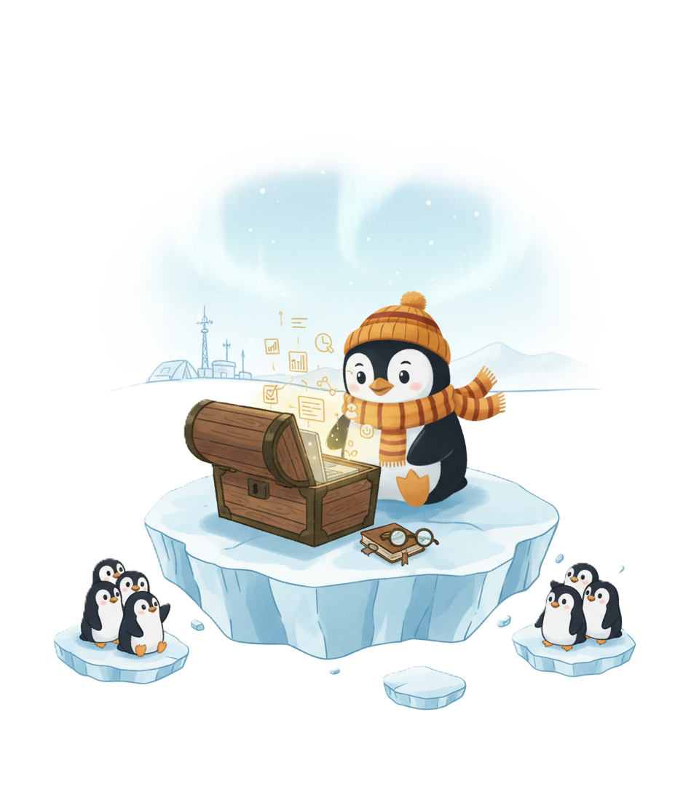
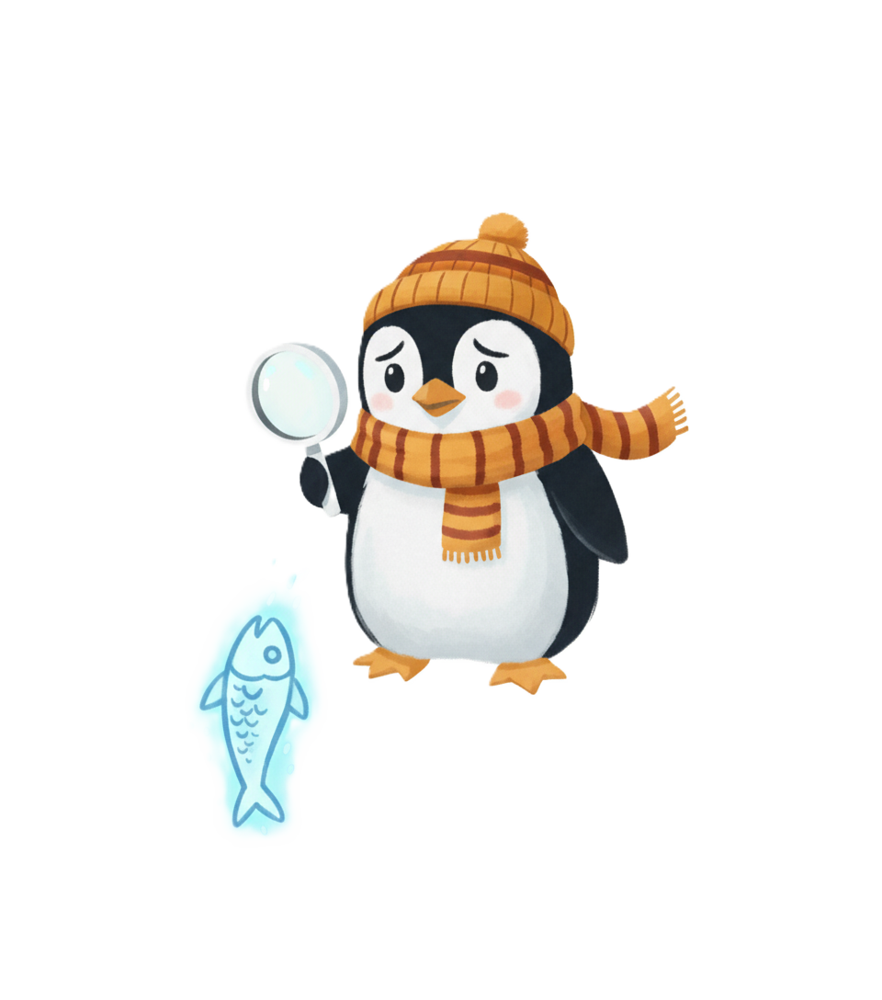
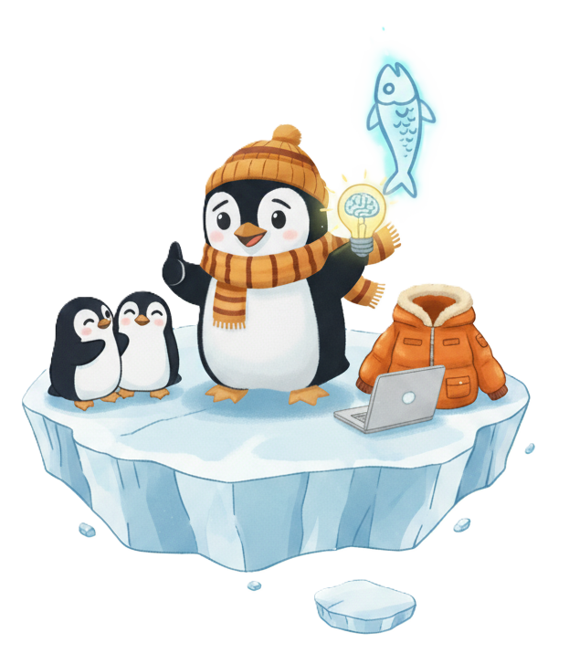
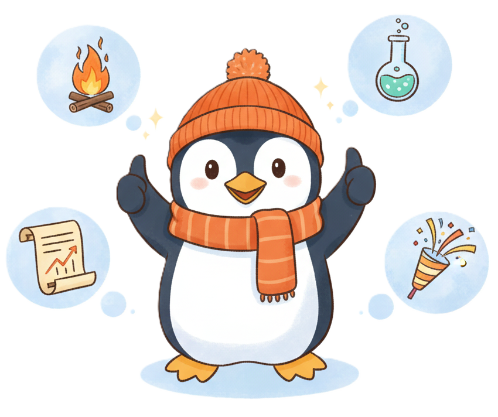
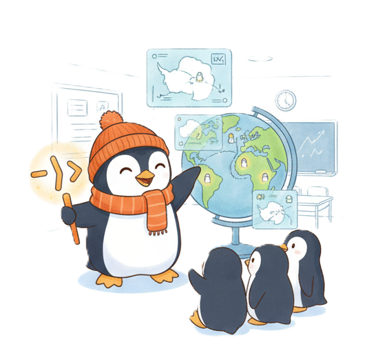
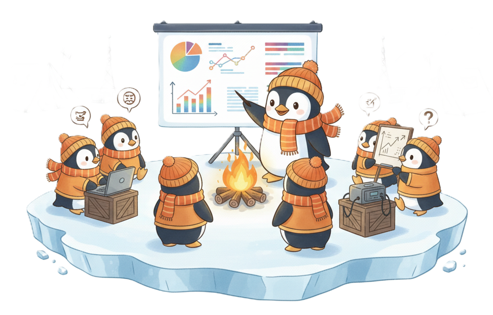

Syllabus
🧭Welcome to Our Expedition!
Welcome, young explorers!
This semester, we are setting off on a thrilling scientific expedition to the icy shores of Antarctica. Our lead guide is an experienced polar explorer, a penguin named Pipe1. He knows everything about data, because his whole life is data: the length of his beak, his wingspan, and even his favorite type of fish!
1 He got his name for his amazing ability to combine different actions into one smooth and logical flow, as if passing data through an invisible “pipeline” (|>). This is the approach he wants to pass on to you!
Our mission is to learn the R language to understand penguins, analyze their lives, and present our findings to the world. Forget about boring lectures. We have campfire briefings, field research, and a final Grand Penguin Gala Presentation awaiting us!
🪶History of the Expedition

Once upon a time, in faraway Antarctica, penguins lived their quiet lives until the first explorers arrived and started collecting data on their behavior. Over time, this data turned into massive sets of information that needed analysis. That was when Pipe appeared, a researcher penguin who learned to use R to understand his world. Now Pipe wants to share his knowledge with you so that you can help him uncover the secrets of penguin life.
🤫The Mystery of the Expedition
Lately, Pipe has noticed something strange. The population of his favorite fish, the ice sardine, has started to decline sharply near the coast. What is happening? Is it climate change? A new predator? Or perhaps the fish have simply migrated?

Our mission is to use the full power of R to analyze data on water temperature, ocean currents, the activity of other animals, and find the answer. The final project will serve as your report to the International Penguin Council, where you will present your findings and save the future of the ice sardines!
✔️What to Pack for the Expedition

- 🧠 An open mind and a thirst for knowledge.
- 🤓 A desire to experiment and no fear of making mistakes.
- 🤝 Readiness to work in a team and share ideas.
- 🧥 Comfortable clothing for cold weather (metaphorically—a comfortable working environment on your computer).
🎯Expedition Goals
- Master the basics of programming in R and using RStudio.
- Learn to collect, clean, and analyze data.
- Develop data visualization skills using ggplot2.
- Prepare and present your own research in the form of a Quarto report.
🏆Expedition Results:

- You will be able to confidently write code in R for data analysis.
- You will learn to create informative visualizations.
- You will gain experience working with real datasets.
- You will be able to present your findings in the form of a professional report.
🛣️What Awaits Us?
Our route includes several exciting stages:

- 🔥Campfire Briefings (Lectures): Here, our lead guide (the instructor) and Pipe will share wisdom: showing maps, teaching how to use tools (R and RStudio), and telling stories about great discoveries in the world of data.
- 🧪Field Research (Practical Labs): Time to get your hands dirty! We will go out onto the “ice floes” (real datasets), learn to clean snow off the data, build charts that shine like the aurora borealis, and make our own discoveries.
- 📈Weekly Expedition Reports (Homework): Every explorer keeps a logbook. You will document your findings, write code, and share results in the format of Quarto reports.
- 🎊Grand Penguin Gala Presentation (Final Project): The culmination of our journey! You (solo or in a team) will present your own research—from data collection to final conclusions—before the esteemed council of penguins (and the instructor).
🐧Biography of Our Guide

Pipe is not just a penguin. He is a true explorer with a passion for data! Born on the icy shores of Antarctica, Pipe was always curious about the world around him. One day, he stumbled upon an old laptop left by researchers and began learning the R language to better understand the behavior of his kin. Thanks to his data analysis skills, Pipe has helped uncover many secrets of penguin life, from migrations to dietary habits. Now he is eager to share his knowledge with you so you can explore this fascinating world of data together with him!
💡Interests
- 🎭 Penguin behavior analysis
- 🖼️ Data visualization
- 🤖 Machine learning
- 🌍 Antarctic ecology
💭Philosophy
“Data isn’t just numbers. These are stories waiting to be told.”
👍Likes
- 🐟 Favorite food: Fresh fish
- 🎶 Favorite music: Sounds of the ocean and calls of other penguins
- ✨ Hobbies: Swimming, exploring new territories, and playing snowballs
✅Fun Facts
- 🛠️ Pipe learned to code by watching researchers.
- 🗃️ He created his own dataset on penguin behavior, which is used in scientific studies.
- 🏫 Pipe dreams of one day opening a school for penguins where they can learn data science.
🧊Expedition Survival Rules

- How to Earn Explorer Badges (Grading): Your successes are recorded in the logbook. For every timely weekly report, you receive up to 10 points. The final gala presentation of your research is worth 30 points. The most active explorers at briefings can receive up to 5 bonus points.
- If You Get Caught in a Snowstorm (Deadline Policy): We understand that anything can happen on an expedition. You can submit a report up to 3 days late, but every day of the storm “eats up” 20% of the maximum grade.
- Polar Explorer’s Honor (Academic Integrity): True explorers rely on their own strength. You can consult at base camp, but the map of your research (code and reports) must be unique. Plagiarism is like trying to pass off someone else’s find as your own. Such actions are not tolerated.
- Using Robot Assistants (Artificial Intelligence): In our expedition, the use of high-tech drones (ChatGPT, Copilot, Gemini, etc.) is allowed. You can ask them to explain complex code, look for errors (debug), or generate ideas for visualization. BUT: You are the lead researcher. The robot cannot write the report for you. You must understand all the code that goes into your logbook. If Pipe asks you “what does this function do?” and you say “I don’t know, the robot wrote it”—that is a mission failure. Rule: If you used AI to generate part of the code, state this in a comment (e.g.,
# generated using Copilot, verified by me).
🔀Our Journey Route
%%{
init: {
'theme': 'base',
'themeVariables': {
'cScale0': '#E6F0FF',
'cScale1': '#DAE8FF',
'cScale2': '#D0E0FF',
'cScale3': '#C6D8FF',
'cScale4': '#BCCFFF',
'cScale5': '#B2C6FF',
'cScale6': '#A8BEFF',
'cScale7': '#9EB6FF',
'cScaleLabel0': '#001a33',
'cScaleLabel1': '#001a33',
'cScaleLabel2': '#001a33',
'cScaleLabel3': '#001a33',
'cScaleLabel4': '#001a33',
'cScaleLabel5': '#001a33',
'cScaleLabel6': '#001a33',
'cScaleLabel7': '#001a33'
}
}
}%%
timeline
title 📍Expedition Roadmap
section Week No.
Campfire<br>Briefing Topic : Field<br>Research<br>Description : Weekly Report No.
section WEEK 1
🧳<br>PACKING<br>SUITCASES : R and IDE<br>Basic R commands<br>Data types : Report 1
section WEEK 2
🐧<br>FIRST STEPS ON ICE : dplyr<br>tidyr<br>tibble : Report 2
section WEEK 3 <br>
📓KEEPING THE CAPTAIN'S LOG : Quarto<br>Reports<br>Presentations : Report 3
section WEEK 4 <br>
🗺️<br>VISUALIZING COLONY DATA : ggplot2<br>Layers<br>EDA : Report 4
section WEEK 5 <br>
📡<br>LISTENING TO PENGUIN TALK : rvest<br>httr2<br>API : Report 5
section WEEK 6 <br>
🔍TECHNIQUES FOR ADVANCED EXPLORERS : DuckDB<br>Arrow<br>Polars : Report 6
section WEEK 7 <br>
🗺MAPPING UNCHARTED LANDS : sf<br>shapefiles<br>rayshader : Report 7
section WEEK 8 <br>
🎉GRAND PENGUIN GALA PRESENTATION!
📖Expedition Logbook: Route Details
Week 1: 🧳 Packing Suitcases
- Topic: R Basics, IDE, Data Types.
- Task: Researchers from the ‘Palmer’ Antarctic station have sent us the first file. It contains basic data on the penguin population. Our first task is to open this “evidence container” in RStudio, check if all data is in place, and determine where we have numbers (beak length), where we have text (penguin species), and where we have logical variables (whether a chick was sighted). This is the foundation of our investigation, and we must be confident in the quality of our first evidence.
- Result of Report #1: The researcher loads the data, uses functions
str(),summary(),class(), and writes a short conclusion.
Week 2: 🐧 First Steps on Ice
- Topic:
dplyr,tidyr(data transformation).- Task: We received a new file about the temperature regime. But the data was collected from several buoys, and it is, to put it mildly, messy. Somewhere there are gaps (
NA), somewhere the temperature is in Fahrenheit instead of Celsius. Your task is to “clean up the crime scene”: usingdplyr, filter out records from broken buoys, usingmutate(), create a new column with temperature in Celsius, and usingselect(), keep only the most important columns. We cannot look for anomalies in dirty data. - Result of Report #2: The researcher provides code for cleaning the data and the final “clean” table.
- Task: We received a new file about the temperature regime. But the data was collected from several buoys, and it is, to put it mildly, messy. Somewhere there are gaps (
Week 3: 📓 Keeping the Captain’s Log
- Topic:
Quarto(reports).- Task: The International Penguin Council demands the first interim report. They don’t want to see just code. They need a professional document. Your task is to format the results of the previous week (cleaned data) into a Quarto report. Add headings, a text description of your actions, the code itself, and the output (e.g., the first 6 rows of the clean table). This is our first official document in the case of the disappearing sardines!
- Result of Report #3: A professionally formatted PDF or HTML report documenting the first steps of the investigation.
Week 4: 🗺️ Visualizing Colony Data
- Topic:
ggplot2(visualization).- Task: Dry numbers are good, but we need a picture! Using cleaned temperature data and sardine population data, create a chart using
ggplot2. On the X-axis—years, on the Y-axis—water temperature and sardine count. Is there a visual correlation? Is it true that when the water gets warmer, there are fewer fish? This could be our first serious piece of evidence! - Result of Report #4: A chart with a conclusion: Visual analysis shows a potential inverse relationship between water temperature and sardine population. Further research is needed.
- Task: Dry numbers are good, but we need a picture! Using cleaned temperature data and sardine population data, create a chart using
Week 5: 📡 Listening to Penguin Talk
- Topic: Web scraping, API.
- Task: One hypothesis is the change in sea ice area. We don’t have this data, but the National Snow and Ice Data Center (NSIDC) publishes it online. Your task is to collect data on Antarctic ice area for the last 10 years using
rvest(or via API, if available). Is there a declining trend? This could be another factor affecting the ecosystem. - Result of Report #5: A script for data collection and the obtained dataset with a short description.
- Task: One hypothesis is the change in sea ice area. We don’t have this data, but the National Snow and Ice Data Center (NSIDC) publishes it online. Your task is to collect data on Antarctic ice area for the last 10 years using
Week 6: 🔍 Techniques for Advanced Explorers
- Topic:
DuckDB,Arrow(big data).- Task: We were handed a giant archive. It contains millions of records on fishing vessel activity. Opening it in Excel is suicide. Use
ArrowandDuckDBto efficiently analyze this data without loading it into memory. Our question: has fishing activity increased in the sardine disappearance area in recent years? - Result of Report #6: An SQL query via
DuckDBto the file and the result (e.g., an aggregated table by years) with a conclusion.
- Task: We were handed a giant archive. It contains millions of records on fishing vessel activity. Opening it in Excel is suicide. Use
Week 7: 🗺 Mapping Uncharted Lands
- Topic:
sf(spatial analysis).- Task: We have coordinates of temperature buoys, fishing data, and places where sardines disappeared. Time to put it all on a map! Using
sf, create a map of the region. Mark thermal anomalies (highest temperature), intense fishing zones, and places where sardines were seen previously. are there “hot spots” where all these factors intersect? This could be the epicenter of our mystery. - Result of Report #7: A map of the region with data layers applied and a conclusion about the spatial overlap of factors.
- Task: We have coordinates of temperature buoys, fishing data, and places where sardines disappeared. Time to put it all on a map! Using
Week 8: 🎉 Grand Penguin Gala Presentation!
- Topic: Final Project.
- Task: Zero Hour. You have collected all the evidence. Now combine the results of all previous reports (text, code, charts, maps) into one final, comprehensive report in Quarto. Draw a clear conclusion, answering the main question: what happened to the ice sardine? Present your theory, backed by the data you analyzed throughout the expedition.
🏕️Our Base Camp
No explorer works alone! Our base camp is a shared Slack chat where we:
- Share interesting findings (useful articles, R packages).
- Help each other if someone gets stuck in a snowdrift (code hanging).
- Prepare together for new stages of the expedition.
Remember: the strength of the expedition is in its team!
Ready for adventure? Then forward, to data and penguins! 🐧🧭
